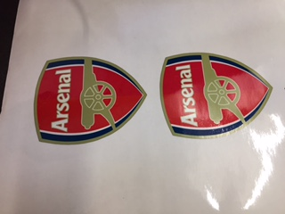
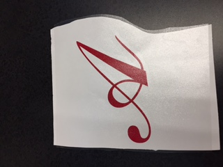

This week we had to make stickers on the Roland Versa Camm Vinyl Cutter in two ways: contour cut stickers and weeding and grassing a monochromic sticker.
For the directly printed contour cut, I pulled out the logo of Reserve Scope and downloaded the logo of Arsenal. After using the contour tool and setting the outline to be the contour cut color, the stickers came out nicely.
The original files are Scope and Arsenal.
For the monochromic stickers, I tried to recreate Hawthorne's Scarlet Letter, and used a script font for the "A". I also printed a letter "L" because LA is a nice city. The photos and files are as follows.
